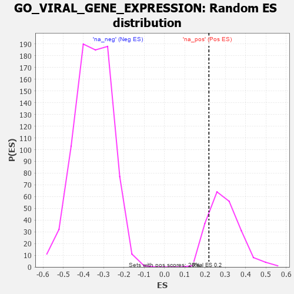

| | | Dataset | 7d |
| Phenotype | NoPhenotypeAvailable |
| Upregulated in class | na_pos |
| GeneSet | GO_VIRAL_GENE_EXPRESSION |
| Enrichment Score (ES) | 0.21899101 |
| Normalized Enrichment Score (NES) | 0.7398882 |
| Nominal p-value | 0.87623763 |
| FDR q-value | 0.94179523 |
| FWER p-Value | 1.0 |
Table: GSEA Results Summary
 Fig 1: Enrichment plot: GO_VIRAL_GENE_EXPRESSION
Fig 1: Enrichment plot: GO_VIRAL_GENE_EXPRESSION
Profile of the Running ES Score & Positions of GeneSet Members on the Rank Ordered List
| PROBE | GENE SYMBOL | GENE_TITLE | RANK IN GENE LIST | RANK METRIC SCORE | RUNNING ES | CORE ENRICHMENT | | 1 | NUP85 | | | 329 | 0.772 | 0.0084 | Yes |
| 2 | NUP54 | | | 505 | 0.627 | 0.0269 | Yes |
| 3 | RAE1 | | | 827 | 0.524 | 0.0202 | Yes |
| 4 | NELFA | | | 883 | 0.510 | 0.0462 | Yes |
| 5 | EIF3F | | | 995 | 0.485 | 0.0636 | Yes |
| 6 | DENR | | | 1084 | 0.467 | 0.0826 | Yes |
| 7 | NUP93 | | | 1127 | 0.459 | 0.1070 | Yes |
| 8 | NUP43 | | | 1160 | 0.453 | 0.1322 | Yes |
| 9 | EIF3D | | | 1276 | 0.435 | 0.1458 | Yes |
| 10 | NUP88 | | | 1429 | 0.404 | 0.1527 | Yes |
| 11 | PTBP1 | | | 1441 | 0.402 | 0.1773 | Yes |
| 12 | NUP58 | | | 1787 | 0.340 | 0.1558 | Yes |
| 13 | NUP62 | | | 1871 | 0.324 | 0.1662 | Yes |
| 14 | EIF3B | | | 1926 | 0.317 | 0.1799 | Yes |
| 15 | EIF3L | | | 2005 | 0.304 | 0.1897 | Yes |
| 16 | EIF3G | | | 2155 | 0.284 | 0.1892 | Yes |
| 17 | CHD1 | | | 2168 | 0.282 | 0.2059 | Yes |
| 18 | REST | | | 2308 | 0.259 | 0.2051 | Yes |
| 19 | SEC13 | | | 2330 | 0.256 | 0.2190 | Yes |
| 20 | NUP50 | | | 2625 | 0.209 | 0.1954 | No |
| 21 | NELFB | | | 2979 | 0.153 | 0.1608 | No |
| 22 | RRP1B | | | 2986 | 0.152 | 0.1698 | No |
| 23 | LEF1 | | | 3037 | 0.144 | 0.1728 | No |
| 24 | HDAC1 | | | 3086 | 0.138 | 0.1757 | No |
| 25 | TAF11 | | | 3147 | 0.130 | 0.1766 | No |
| 26 | NUP98 | | | 3261 | 0.112 | 0.1696 | No |
| 27 | CTDP1 | | | 3279 | 0.109 | 0.1745 | No |
| 28 | DHX9 | | | 3693 | 0.044 | 0.1252 | No |
| 29 | SPCS1 | | | 3795 | 0.028 | 0.1143 | No |
| 30 | RSF1 | | | 4267 | -0.053 | 0.0584 | No |
| 31 | USF1 | | | 4296 | -0.059 | 0.0587 | No |
| 32 | EIF2D | | | 4423 | -0.081 | 0.0480 | No |
| 33 | SNW1 | | | 4514 | -0.096 | 0.0429 | No |
| 34 | EIF3A | | | 4842 | -0.167 | 0.0124 | No |
| 35 | EP300 | | | 4941 | -0.186 | 0.0121 | No |
| 36 | USF2 | | | 5232 | -0.252 | -0.0082 | No |
| 37 | PCBP2 | | | 5539 | -0.331 | -0.0254 | No |
| 38 | CCNT2 | | | 5804 | -0.406 | -0.0324 | No |
| 39 | TFAP4 | | | 6254 | -0.556 | -0.0531 | No |
| 40 | TPR | | | 6597 | -0.709 | -0.0505 | No |
| 41 | CDK9 | | | 7266 | -1.138 | -0.0612 | No |
| 42 | SP1 | | | 7840 | -2.321 | 0.0165 | No |
Table: GSEA details [plain text format]

Fig 2: GO_VIRAL_GENE_EXPRESSION: Random ES distribution
Gene set null distribution of ES for GO_VIRAL_GENE_EXPRESSION